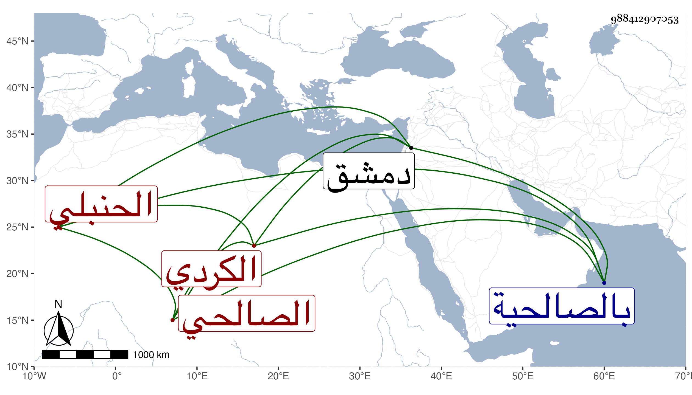

0902Sakhawi.DawLamic.ITO20230111-ara1.EIS1600.988412907053
Biography ID: 988412907053
أحمد بن إبراهيم بن عبد الله الكردي الصالحي الحنبلي ويعرف بابن معتوق ذكره شيخنا في معجمه وسمى جده معتوقا وقال لقيته بالصالحية فقرأت عليه صفة الجنة لأبي نعيم بسماعه له على علي بن أبي بكر بن حصن الحراني قال ومات في حصار دمشق في شوال سنة ثلاث وأعاده في أبي بكر ولم ويسمه وسمى جده أيضا معتوقا وأما في أنبائه فسماه أحمد وجده عبد الله وقال المعروف بابن معتوق وأنه مات بعد عيد الفطر وهو في عقود المقريزي بدون عبد الله .
